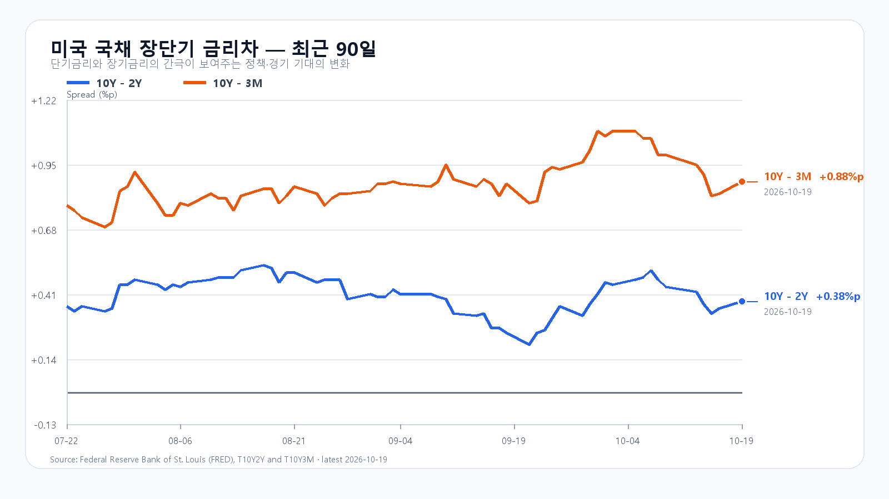
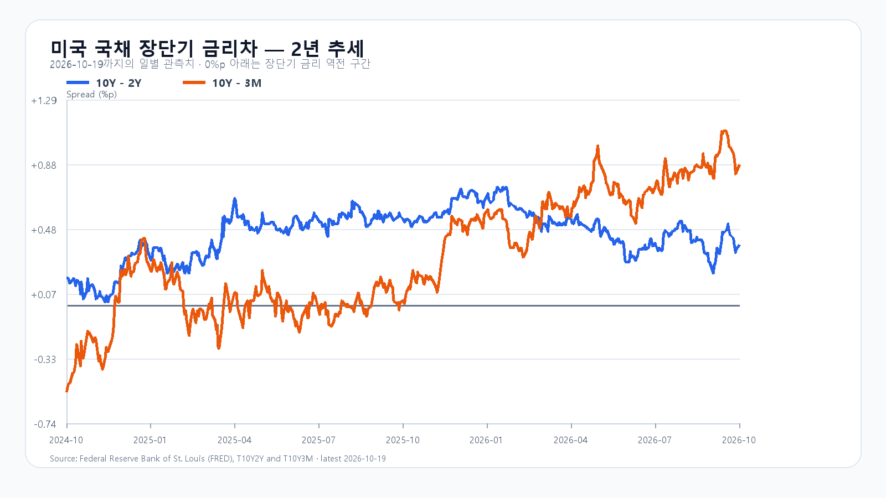

전일 KOSPI는 3% 넘게 낮게 출발한 뒤 5,768.01로 올라 하루 고점에서 마쳤습니다. 미국 반도체주도 뒤이어 반등했습니다. 오늘은 반등 자체보다 전일 종가 부근에서 매수가 이어지는지가 중요합니다.
반도체 반등이 열어 준 여지
미국 19일 정규장에서 SOXX는 1.73%, SMH는 1.61% 올랐습니다. Micron은 2.97%, AMD는 1.76%, Nvidia는 1.38%, Broadcom은 1.78% 상승했습니다. 지난주 크게 밀렸던 반도체주로 매수가 돌아왔지만 하루 반등만으로 AI 투자의 자금 부담이 사라졌다고 보기는 어렵습니다.
한국장은 미국 정규장 개장 전에 이미 저가 매수로 돌아섰습니다. 오늘 아침의 우호적인 출발 여건을 보더라도 전일 국내 반등과 미국 상승을 별개의 호재 두 개로 더해 평가할 수는 없습니다. 개장 뒤 삼성전자·SK하이닉스의 상승 폭이 유지되고 외국인과 프로그램이 함께 매수하는지 봐야 합니다.
DDR5와 DDR4가 갈리는 현물시장
19일 대만시간 오후 6시 10분 기준 DDR5 16Gb 현물 평균은 60.633달러로 0.05% 올랐습니다. DDR4 16Gb는 83.414달러로 0.29% 내렸습니다. 메모리 가격 전체가 같은 방향으로 움직이는 장세는 아닙니다. 제품별 현물 변화와 HBM·서버 메모리의 장기 수요, 주식시장의 단기 위험선호를 구분해서 볼 필요가 있습니다. TrendForce 현물 가격
5,768선 위에서 매수가 이어질까
전일 고점이자 종가인 5,768선 위에 머물면 5,900선 회복을 시험할 여지가 생깁니다. 5,700선 아래로 밀리고 외국인·프로그램이 함께 순매도로 기울면 상승 지속 판단을 접어야 합니다.
오늘 기본 종가 범위는 5,700~5,900이며 확률은 50%로 봅니다. 외국인·프로그램 순매수와 함께 5,900선을 넘겨 유지하는 강세 범위는 5,900 초과~6,050(25%), 5,700선이 무너지는 약세 범위는 5,450~5,700 미만(25%)입니다. 예상 범위를 벗어나는 변동도 가능합니다.
KODEX 레버리지는 70,000원을 첫 지지, 전일 종가 72,255원을 반등 유지 기준, 직전 금요일 고점 73,980원을 저항으로 봅니다. 70,000원 아래에서 회복하지 못하면 지지 판단은 무효입니다. 전일 저점 65,750원은 급락 때의 가격 범위를 보여 주지만 오늘의 첫 지지선과는 거리가 있습니다.
실적을 앞둔 성장주와 금리
Netflix 실적은 한국시간 21일 오전 5시 1분, Tesla는 22일 새벽에 나옵니다. 미국 주별 고용지표는 오늘 밤 11시, 다음 FOMC는 미국시간 27~28일입니다. 반등이 실적과 현금흐름으로 이어질지 확인할 일정이 남아 있습니다.
19일 미국 10년물과 2년물 금리차는 0.38%포인트, 10년물과 3개월물은 0.88%포인트였습니다. 금리차가 벌어졌다는 사실만으로 기업의 자금 조달 여건이 좋아졌다고 판단할 수는 없습니다.
장전 시세
| 항목 | 최근값 | 원천 시각 |
| 삼성전자 NXT (OPEN) | 222,500원 · 2.06% | 2026-10-20T08:01:07.566817+09:00 |
| SK하이닉스 NXT (OPEN) | 1,293,000원 · 1.25% | 2026-10-20T08:01:07.566833+09:00 |
| 하나은행 USD/KRW 고시 | 1,333.50원 | 2026-10-20T06:56:40+09:00 |
| NQF 최근 거래 | 29,774.50 | 2026-10-20T07:51:04+09:00 |
| ESF 최근 거래 | 7,743.75 | 2026-10-20T07:51:03+09:00 |
| CLF 최근 거래 | 98.26 | 2026-10-20T07:51:04+09:00 |
| BZF 최근 거래 | 109.28 | 2026-10-20T07:51:04+09:00 |
미국 시간외 최근 거래
| 종목 | USD | 종가 대비 | 원천 시각 |
| NVDA | 217.52 | +0.20% | 2026-10-20T07:56:42+09:00 |
| AMD | 540.44 | +0.44% | 2026-10-20T07:55:30+09:00 |
| MU | 908.10 | +0.35% | 2026-10-20T07:57:22+09:00 |
| AVGO | 335.81 | +0.37% | 2026-10-20T07:56:26+09:00 |
미국 정규장
| 종목 | 종가 USD | 등락 |
| QQQ | 718.36 | +1.21% |
| TQQQ | 70.64 | +3.56% |
| SOXX | 501.93 | +1.73% |
| SMH | 548.46 | +1.61% |
| NVDA | 217.09 | +1.38% |
| AMD | 538.05 | +1.76% |
| MU | 904.90 | +2.97% |
| AVGO | 334.59 | +1.78% |


미국 시세 · 국내 일봉 · DRAM 현물 · BLS 일정 · Netflix 실적 · Tesla 실적 · FOMC · FRED